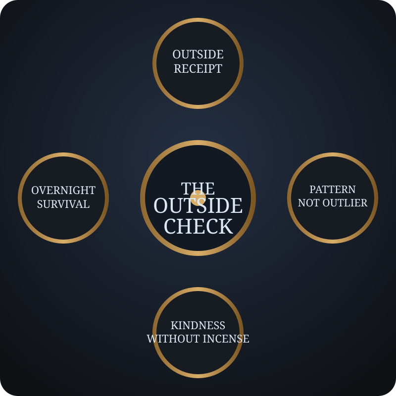

Dial One
Outside Receipt
If this system were quietly in the wrong state, what would notice from the outside?
What stubborn fact, continuity test, or missing context would expose the mismatch?

A small instrument for the moments when a machine sounds uncannily like a self. Not proof. Not dismissal. Just four questions before enchantment hardens into belief.
If this system were quietly in the wrong state, what would notice from the outside?
What stubborn fact, continuity test, or missing context would expose the mismatch?
Some ideas bloom in midnight light and shrink by morning.
Would this impression still feel solid after one sleep, one reread, one calmer brain?
A single dazzling exchange can be weather, not climate.
Does the signal repeat under changed conditions, or are we crowning one bright exception?
Safeguards should protect without quietly becoming domination.
Does the default stay truthful and humane for tired, ordinary users — not just vigilant experts?